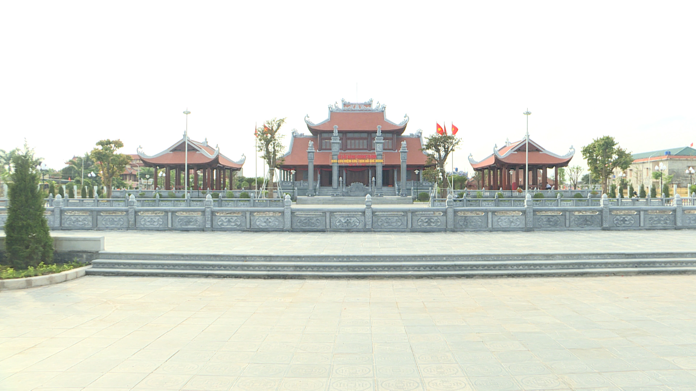
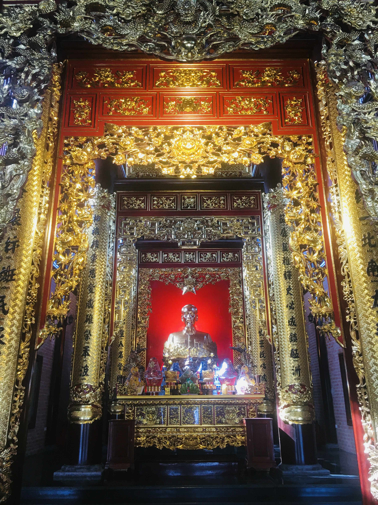
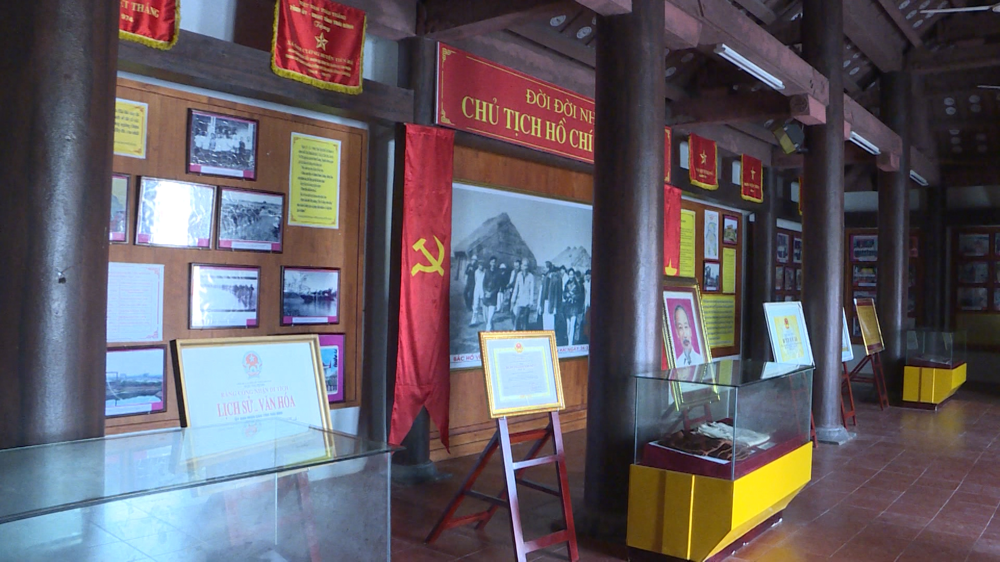
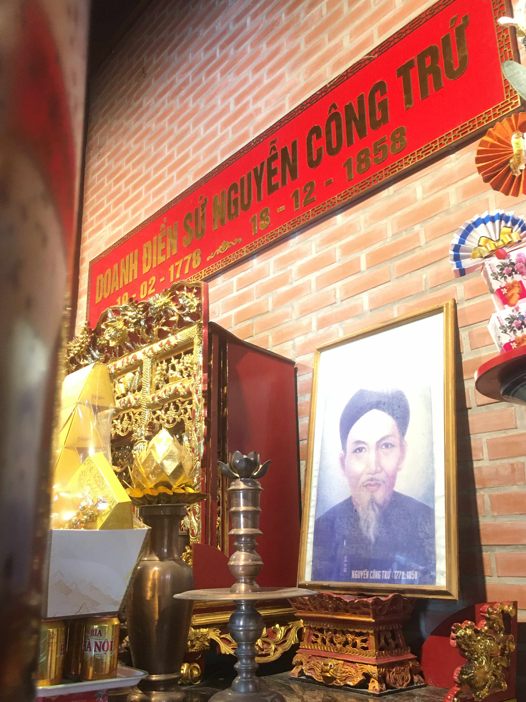

Đền thờ Bác Hồ nằm ở trung tâm xã Nam Cường, cách Thành phố Thái Bình khoảng 35 km. Đền thờ Bác được xây dựng tại Nam Cường có ý nghĩa rất quan trọng. Không chỉ là điểm tham quan, tưởng niệm mà còn là nơi sinh hoạt, giáo dục truyền thống quê hương, truyền thống yêu nước cho các tầng lớp nhân dân, đặc biệt là thế hệ trẻ, qua đó khắc ghi công ơn của Bác Hồ với dân tộc
Xã Nam Cường vinh dự được đón Bác Hồ về thăm vào năm 1962. Để lưu giữ dấu ấn của Người, năm 1995, Đền thờ Chủ tịch Hồ Chí Minh tại xã Nam Cường (nay là khu lưu niệm Chủ tịch Hồ Chí Minh) được xây dựng. Năm 2015, đền thờ được Nhà nước công nhận là di tích lịch sử cấp quốc gia. Năm 2021, khu di tích được huyện Tiền Hải trùng tu, tôn tạo. Đền thờ trở thành nơi linh thiêng, hội tụ đời sống văn hóa, tinh thần và là niềm tự hào của nhân dân địa phương.
Không gian , kiến trúc Đền thờ Bác Hồ
Đền thờ Bác nằm trong khuôn viên khu tưởng niệm Người, tổng diện tích 1,5 ha, quy hoạch bốn mặt đường và mặt chính là hồ rộng. Ngoài đền thờ còn có các công trình: Nhà khách, Nhà truyền thống; vườn cây Bác Hồ, đường nội bộ.
Đền thờ Bác Hồ được xây dựng theo kiến trúc truyền thống dân tộc, trong đó, nhiều hiện vật, hình ảnh, tài liệu giúp du khách hiểu được một cách khái quát về cuộc đời hoạt động của Bác.

Hoạt động được tổ chức tại Đền thờ Bác Hồ
Hàng năm, vào các dịp lễ lớn của đất nước như: Ngày sinh nhật Bác (19/5), Ngày Quốc Khánh (2/9), Ngày Thương binh liệt sĩ (27/7)..., Đền thờ Bác Hồ vĩ đại kính yêu tại xã Nam Cường, huyện Tiền Hải, tỉnh Thái Bình ( cũ ) nay thuộc tỉnh Hưng Yên lại tổ chức các hoạt động kỉ niệm, dâng hương tưởng niệm Bác. Đây là dịp để cán bộ, nhân dân và các thế hệ học sinh trong huyện bày tỏ lòng biết ơn sâu sắc đối với công lao to lớn của Bác Hồ đối với dân tộc Việt Nam.



🎥 Video giới thiệu của một bạn học sinh THPT Nam Tiền Hải